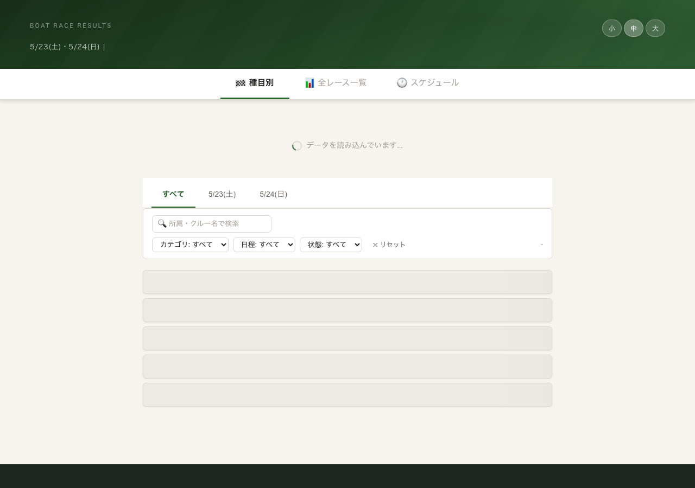
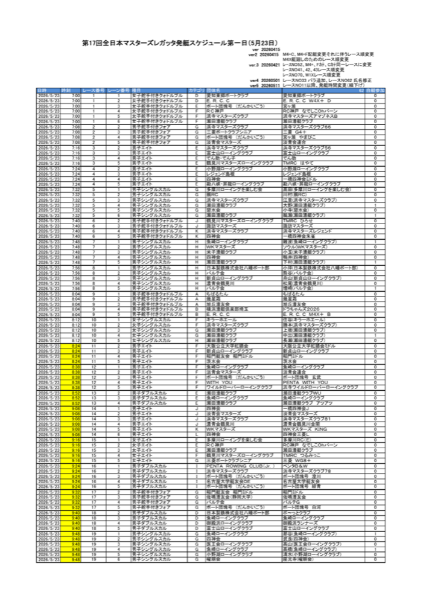
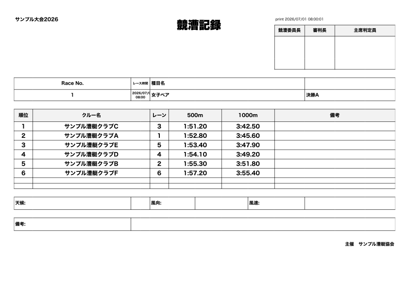
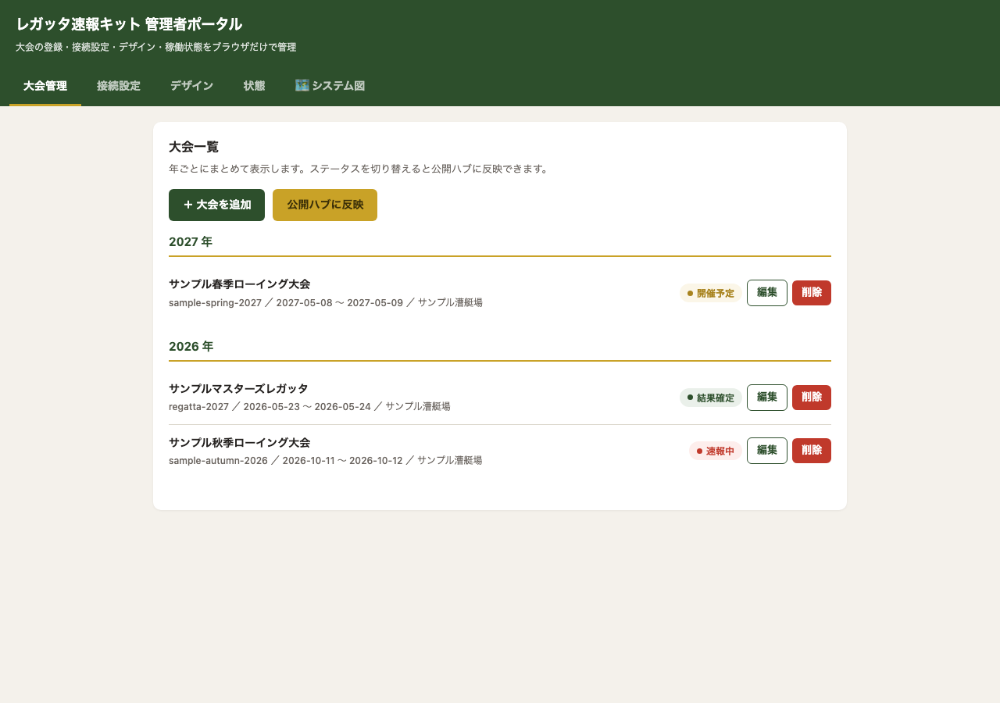

計測CSVを決まったフォルダに入れるだけ。
約2分後、参加者のスマホに結果が届く。
準備するもの: Google / GitHub / Cloudflare の3アカウント
計測CSVをGoogle Driveの指定フォルダに入れるだけ。GASが自動でデータを変換し、Cloudflare Pages上のサイトが更新される。URLを配って終わり。

A4縦のPDFを自動出力。プリンターに送るだけで会場掲示が完了する。手作業でのレイアウト編集は不要。

判定員が使う帳票もCSVから自動生成。大会開始前に名前・レーン・エントリー情報が揃った状態で出力される。

協会が主催する複数大会を同一のURLで管理・公開。年間スケジュールと逐次結果を一覧できる。大会ごとに設定ファイルを変えるだけで使い回せる。
CSVをドライブのフォルダに入れる。それだけ。
接続状態・処理件数・最終更新時刻をダッシュボードで確認できる。CSVが正しく処理されたかをその場で判断できる。

各ステップにセルフチェックと詰まったときの対処方法を記載している。
かかりません。Google / GitHub / Cloudflare はいずれも無料枠があり、大会速報用途であれば無料の範囲で十分に運用できます。
導入に必要な操作は「コピー&ペーストと数か所の書き換え」だけです。手順書のとおりに進めれば完了できるよう設計しています。
3つのアカウントを用意するだけです。
いずれも無料で作成できます。PC（スマホ不可）とインターネット環境があれば始められます。
各ステップの末尾に「うまくいかないとき」の確認項目と対処方法を記載しています。エラーメッセージが出たときの手順も書いているので、見ながら進めれば解決できる場合がほとんどです。
使えます。複数大会を年間ハブで一元管理する機能を実装済みです。大会ごとにデータをリセットする操作だけで、同じ仕組みを繰り返し利用できます。